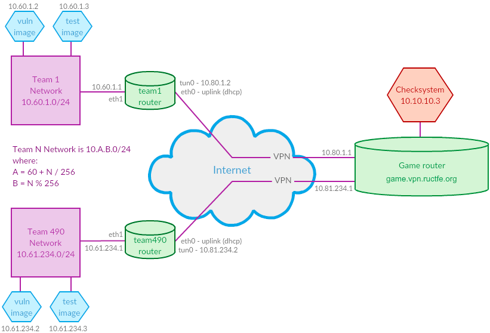

NETWORK SCHEME

Team network for team with ID N is: 10.60.1.0/24, where A = 60 + N / 256, B = N % 256.
If it seems difficult, just enter a team ID to see instructions for your team. You can get team ID in config files.
CLOUD
This year we will provide the hosting for your vulnerable image on our servers again. If you are hearing about it for a first time, our FAQ should help.Here is an instruction how to set up image in cloud:
0. Enter to the cloud web console, https://cloud.ructfe.org . The interface will be opened at 18 JUL 2021 10:00 UTC+5.
1. Create the vulnerable vm
# create_vm
2. Get the vpn config to enter your network segment
# get_team_openvpn_config
Save as ructfe.ovpn
3. Give the config from the previous step to every team member and run openvpn:
Linux and MacOS: openvpn ructfe.ovpn
Windows: right-click on ructfe.ovpn -> Start OpenVPN on this config file
4. Connect to vulnerable vm using ssh client:
# get_vm_info
5. After initial setup, make your first vm snapshot, so you can recover to that saved state later:
# take_snapshot
6. If you had non-cloud setup, shut down the openvpn client on your game router.
7. Connect vm network to the game network:
# connect_vm_to_game_network
Now other teams and checksystem are able to access the vm.
Also, now you should be able to access other teams and checksystem (if the game network is opened, of course)
8. Have a nice game!
The next steps are required only for non-cloud setup, but we still recommend to follow them just in case.
SET UP VIRTUAL MACHINES
1. Install VirtualBox.2. Download router and test images
3. Check SHA256 sums:
—
RuCTFE2020_Router.ova
—
RuCTFE2020_TestImage.ova
(4) Import both images to VirtualBox: 'File->Import Appliance...
(5) Check router image settings. Go to: 'Settings->Network->Adapter2'. Make sure that it is bridged to your real, hardware network adapter. It is preferable to use Ethernet adapters for bridging rather than Wi-Fi adapters.
(6)Check test image settings. Make sure that Adapter1 is bridged to your real network adapter.
(7)Start both virtual machines. You will see some instructions on a logon screen.
(8)Follow instructions on the logon screen and enter your team number to configure the network:
router image:
eth0 - this is your uplink. Address is obtained via dhcp by default. This interface is attached to NAT in VirtualBox, so make sure that you have an internet connection on your physical host;
eth1 - this is your internal interface. It should be automatically set to: 10.60.1.1.
test image:
eth0 - it should be automatically set to: 10.60.1.3 and gateway: 10.60.1.1.
(9)You should use following network settings for your team's PCs during the game (or virtual machines setup):
IP = 10.60.1.128 — 10.60.1.255
Netmask = 255.255.255.0
Gateway = 10.60.1.1
DNS = 8.8.8.8
SET UP VPN CONNECTION
1 Follow the instructions sent on your PoC email (if not, please send message to info@ructf.org or Vik at Slack) to obtain your OpenVPN config.2 Copy the config to /etc/openvpn/*.conf (for example to /etc/openvpn/ructfe.conf).
3 Restart OpenVPN on your router (service restart openvpn@ructfe if your confing has name ructfe.conf).
4 Check network connectivity. You should be able to ping 10.80.1.1 from your router and testimage (C = 80 + N / 256, N is your team ID). Check your connection status at http://vpn.ructfe.org/ (all tests for your team should pass, the page updates once in a few minutes)
5 Leave both images running. You can shut down your testimage when the game starts.